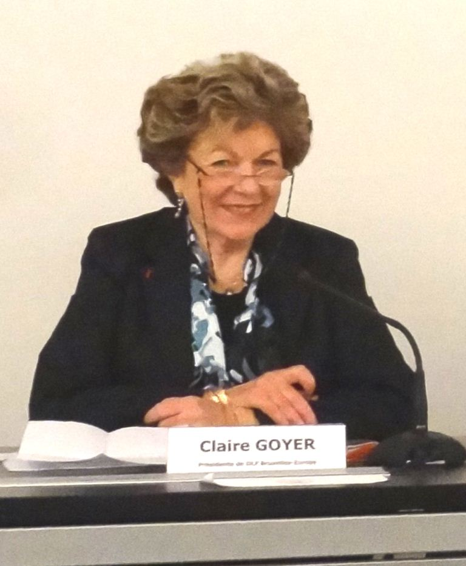
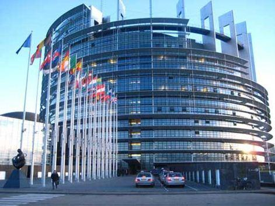
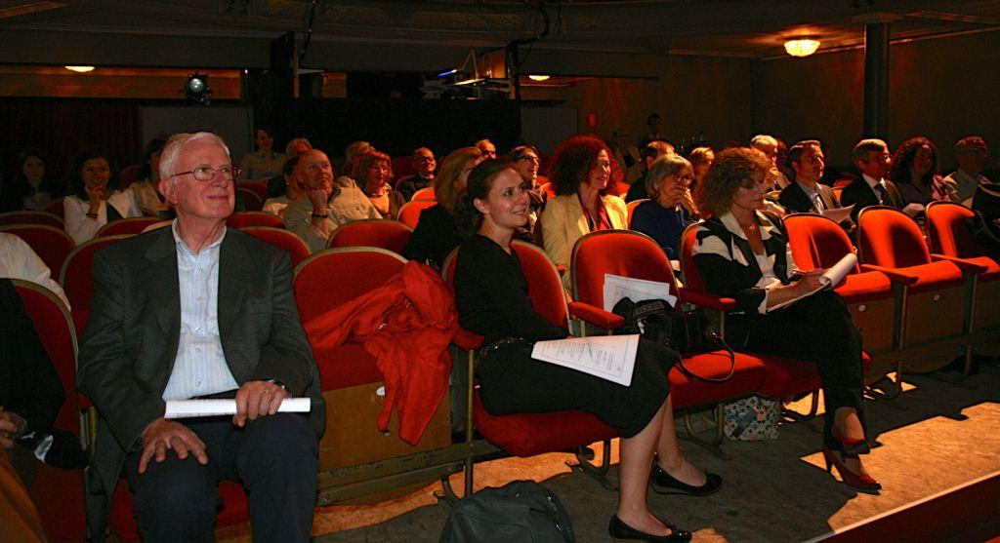

Défense de la langue française DFL Bruxelles-Europe
par Véronique LIKFORMAN
DLF Bruxelles-Europe était au départ – est toujours – une délégation de DLF Internationale (Défense de la langue française), une association créée en 1958, dont le président est, traditionnellement, de l’Académie française. Le président actuel est Monsieur Xavier Darcos1 (http://www.academie-francaise.fr/les-immortels/xavier-darcos).
Claire Goyer avait créé la délégation en 2005 ; elle en a été la présidente, l’âme et l’esprit jusqu’à son décès brutal en décembre 2013.
DLF Bruxelles-Europe est devenue par la suite une association à part entière, en septembre 2014.
Les objectifs de DLF Bruxelles-Europe comprennent bien sûr la défense et le rayonnement de la langue française comme langue de culture universelle ; cependant en choisissant de faire glisser le nom et les objectifs de DLF vers Diversité linguistique et langue française, Claire Goyer avait voulu souligner ses préoccupations premières : la défense de la langue française en tant que langue de travail et de communication et la défense de la diversité linguistique dans les institutions européennes.
L’enjeu du multilinguisme est d’importance dans ces institutions installées à Bruxelles et ailleurs, où malgré les traités et les promesses, l’anglais devient la lingua franca au détriment des autres langues de l’Union européenne.
Si tous les acteurs de l’Europe, élus, fonctionnaires, s’expriment dans un langage appauvri – l’anglais des institutions a peu à voir avec la langue de Shakespeare, y compris pour ceux dont c’est la langue maternelle – on aboutit à une pensée appauvrie elle aussi, à une vision du monde sans complexité, ni place pour la diversité à l’origine de l’idée européenne.
Chaque langue véhicule une vision du monde ; chaque langue a son propre système de pensée, sa culture : vouloir couler l’Europe dans un moule unique au travers d’une langue serait aussi absurde que désastreux.
Nous demandons que chaque citoyen européen puisse prendre connaissance des documents et de ce qui concerne l’Union européenne dans sa propre langue : par exemple, le site de la Commission européenne est tout en anglais ; que les discours et déclarations des uns et des autres se fassent dans la langue du locuteur, ou au moins dans une langue maîtrisée : les perles relevées parfois montrent que c’est loin d’être le cas ! Contrairement à ce qui est trop souvent avancé, les coûts de traduction et d’interprétariat n’ont rien de dissuasif : l’image le prix d’une tasse de café par an et par citoyen revient souvent pour donner une idée concrète de ces coûts.
Les activités de DLF Bruxelles-Europe sont en ligne sur notre site (http://dlf-bruxelles.eu).
Nous avons ouvert une page Francophonie en Europe et ailleurs, pour faire connaître les activités de ceux qui ont en partage l’amour du français partout dans le monde.
En dehors des conférences, des actions auprès des institutions, des articles écrits pour la revue2 de DLF internationale, nous avons mis en place un site avec le soutien de la Fédération Wallonie-Bruxelles, Graines de baobab, destiné à favoriser les échanges dans le monde francophone, qui sera lancé et démarrera officiellement fin mai (http://www.grainesdebaobab.eu/).
DLF se préoccupe également de promouvoir l’intercompréhension3, encore peu pratiquée – pourtant une piste intéressante pour une meilleure communication et une réelle ouverture aux autres.
Nous voulons créer un réseau, pour la francophonie, et plus largement pour le plurilinguisme et la diversité des langues et des cultures : l’union fait la force ; DLF Bruxelles-Europe se bat pour que l’Europe reste fidèle à sa devise, Unie dans la diversité.
V.L.
1Monsieur Philippe Beaussant, président de DLF jusqu’en février 2016, vient de disparaître, le 8 mai, à l’âge de 86 ans. C’était un homme d’une érudition et d’un engagement artistique et littéraire exceptionnels, et tout simplement un homme charmant, plein d’humour de d’humanité.
2La revue Défense de la langue française paraît quatre fois par an. Elle publie, sur notre langue, de nombreux articles qui permettent au lecteur d'enrichir ses connaissances et elle s'ouvre aux adhérents pour y exprimer leur avis et leurs suggestions. Elle se fait aussi l'écho de la vie du français, en particulier en publiant les travaux de l'Académie et des commissions de terminologie et de néologie. Elle présente enfin les activités des cercles parisiens et des sections régionales.
Partager cette page